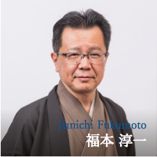
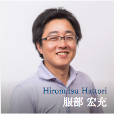
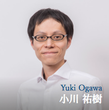

# 研究室&教員
先端社会デザインコース（FSDコース）の教員と研究室、研究室の場所は次のようになっています。
# 教員
このコースの教員は，教授5名、准教授3名、講師1名、助教1名の計10名で構成されています。
 |  |  |  | |
|  | ||||
 | | | | |
# 研究室
# ナレッジコンピューティング研究室 (來村研)
來村 徳信 教授 (opens new window), 研究室HP (opens new window)
研究キーワード: 知識共有、発想支援、セマンティックWeb、オントロジー
# セマンティックコミュニケーション研究室 (桑原研)
桑原 和宏 教授 (opens new window), 研究室HP (opens new window)
研究キーワード: 知識処理、コミュニケーション支援、クラウドソーシング、ゲーミフィケーション
# 自然言語処理研究室 (福本研)
福本 淳一 教授 (opens new window), 研究室HP (opens new window)
研究キーワード: 自然言語処理、質問応答、情報抽出、インタラクション支援、観光情報
# ディジタル図書館研究室 (前田研)
前田 亮 教授 (opens new window), 研究室HP (opens new window)
研究キーワード: 情報検索、情報推薦、テキストマイニング、ディジタルヒューマニティーズ
# 対話デザイン研究室 (西原研)
西原 陽子 教授 (opens new window), 研究室HP (opens new window)
研究キーワード: 情報抽出、情報可視化、インタラクション、コミック工学
# コラボレーションデザイン研究室 (服部・小川研)
服部 宏充 教授 (opens new window), 小川 祐樹 講師 (opens new window), 研究室HP (opens new window)
研究キーワード: マルチエージェントシステム、人工知能、社会シミュレーション、ビッグデータ解析、機械学習
# 社会知能研究室 (村上・PITUXCOOSUVARN研)
村上 陽平 准教授 (opens new window), Mondheera Pituxcoosuvarn 助教 (opens new window), 研究室HP (opens new window)
研究キーワード: サービスコンピューティング、Webサービス、集合知、異文化コラボレーション、デザイン学
# 認知工学研究室 (泉研)
泉 朋子 准教授 (opens new window), 研究室HP (opens new window)
研究キーワード: 認知工学、観光・防災支援、思い出工学、感性、運転支援、ヒューマンインタフェース
# 研究室の場所
研究室は立命館大学びわこ・くさつキャンパスのクリエーションコアの5Fと7Fにそれぞれあります。コース会議室は7Fにあります。